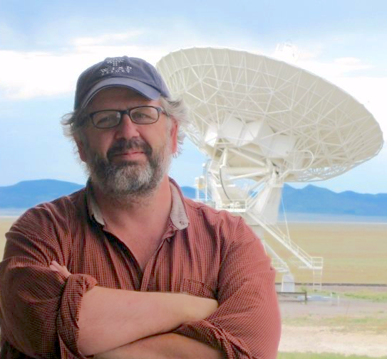
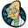

EMAIL: tim.menzies@gmail.com. FAX: 919-515-7896 (attn t.menzies). ADDR: Com Sci 890 Oval Dr, Campus Box 8206- Raleigh, NC 27695-8206
| Prospective students: | Why CS ? ➜ | Why SE ? ➜ | Why SE + AI ? ➜ | Meet my students ➜ | See my projects ➜ | Apply now! |
|  |
|
|


Full professor exploring SE, data mining, AI, search-based SE, open access science.
My Ph.D. is from UNSW, Australia, 1995.
- Teaching: grad SE (spring) + automated SE (fall)
- Curator: PROMISE repository of SE data
- Director: RAISE lab: real world AI for SE
- Formerly: SE research chair, NASA, 2002-2003
So back off man, I'm a scientist. 
Career:
- Funding: $7 million in grants
- Ranking: a top-100 most cited author (in SE)
- Students: 8,23 phd,masters students completed
- Papers: 230+ referred papers
- H-index: 37 (January, 2015)
Service:
- Member: ASE conference steering committee
- Co-pc-chair: ICSE NIER'15, ASE'12
- Assoc. editor: TSE, ASE, EMSE journals
- Co-general-chair: ICSME'16
- PCs: Icse'16, Ase'15, BigDSE'15, Ease'15, EsPreSSE'15, Esem'15, Fse'15, Gecco'15, Icpc'15, Issre'15, Msr'15, NasBase'15, Promise'15, Raise'15, Ssbse'15
Recent Talks:
- ICSE'15 tut: Kits to find the bits that fit
- ICSE'14 tut: Art & Science of Analyzing SE Data
- ICSE'14 workshop keynote (WetSOM'14): What Metrics matter.
- More talks.
News:
- Jun 9 New research: V&V of industrial AI (with LexisNexis).
- May 17Keynote, ICSE'15 workshop Kits to find the bits that fit
- May 8 Three papers submitted to ASE'15.
- May 1 ASE'15 worskhop approved Action'15
- Mar 20 Book #3 approved by publisher.
- Mar 17 Invited to the ISSRE'15 PC.
- Mar 14 Two papers submitted to FSE'15.
- Mar 01 Jane Cleland-Huang names me empirical software hero.
- Feb 22 Now a TOSEM distinguished reviewer.
- Jan 27 Out now: my special journal issue, AI synergies with SE, with Rachel Harrison.
- Jan 26 Arrived! My new book!.
- Jan 26 New project with LexisNexis on big data scripts.
- Jan 20 My transfer learning project arrives at NCSU.
- Jan 20 On-line: Data collection for public health decisions, with Susan Partington and Vasil Papakroni.
- Jan 14 Grant submitted to NSF; (1) self-optimizing compilers; (2) better software refactoring.
- Older news archived here.
 More about me:
More about me:
- I'm married to Helen Burgess who claims she's not Batman but I've never seen her and Bruce Wayne in the same room at the same time so....
- In my time, I've been a nurse/ taxi-driver/ rocket scientist/ newspaper editor/ lecturer.... (what can I say? It all made sense at the time).
- I got to NcState after a Ph.D. at UNSW, Sydney, 1995, then some time working with NASA (early last decade) and the University of British Columbia. Then there was some free lance research for two years at Portland and six years at West Virginia University (go 'eers).
 Brief bio:
Brief bio:
- Tim Menzies (Ph.D., UNSW, 1995) is a full Professor in CS at North Carolina State University where he teaches software engineering and automated software engineering. His research relates to synergies between human and artificial intelligence, with particular application to data mining for software engineering.
- He is the author of over 230 referred publications; and is one of the 100 most cited authors in software engineering out of over 80,000 researchers (http://goo.gl/BnFJs). In his career, he has been a lead researcher on projects for NSF, NIJ, DoD, NASA, USDA, as well as joint research work with private companies.
- Prof. Menzies is the co-founder of the PROMISE conference series devoted to reproducible experiments in software engineering (http://openscience.us/repo). He is an associate editor of IEEE Transactions on Software Engineering, Empirical Software Engineering and the Automated Software Engineering Journal. In 2015, he will serve as co-chair for the ICSE'15 NIER track. For more, see his vita (http://goo.gl/8eNhY) or his list of publications http://scholar.google.com/citations?user=Qmuz0WAAAAAJ) or his home page http://menzies.us.
 Old News:
Old News:{kind=link}
- Dec 20 Invited to give keynote at the ICSE'15 workshopArchitecture and Metrics.
- Dec 15 ICSE'15 accepts tech. briefing Analyzing Software Data. With Leandro Minku + Fayola Peters.
- Dec 15 ICSE'15 accepts LACE2, privacy-based transfer learner. With Fayola Peters.
- Nov 15 IEEE Trans on Human Factors accepts a GALE applications paper. With Joe Krall.
- Oct 30 New NSF proposal submitted: next gen journal/ repository.
Older news:
- Jul'74 AC/DC releases first single Can I Sit Next to You Girl?.
- 2439 bc Noah survives flood.
- 4004 bc Biggest bang, ever.